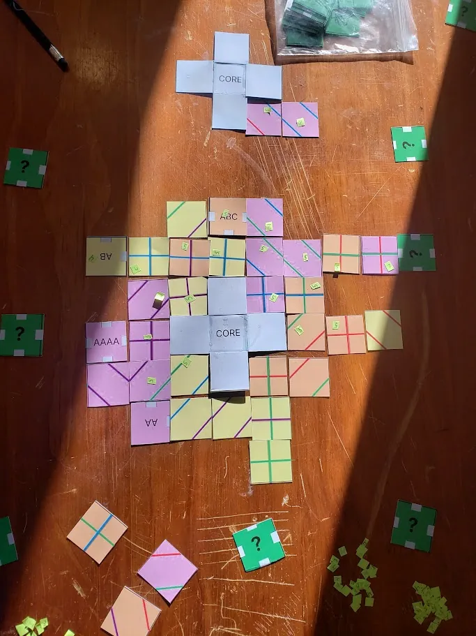
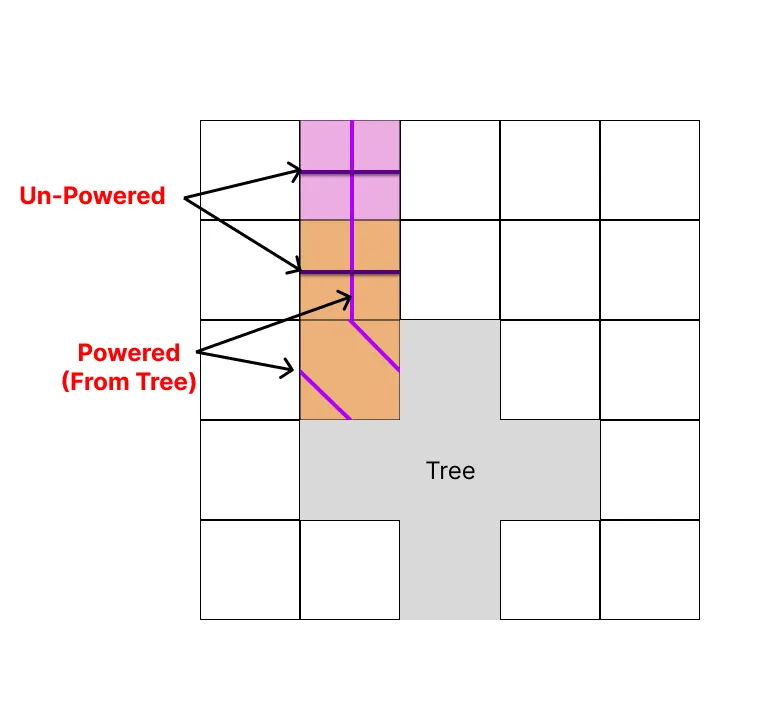
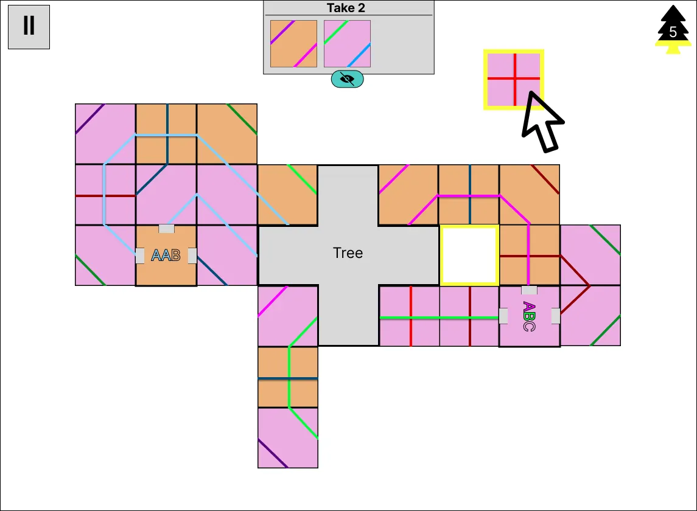
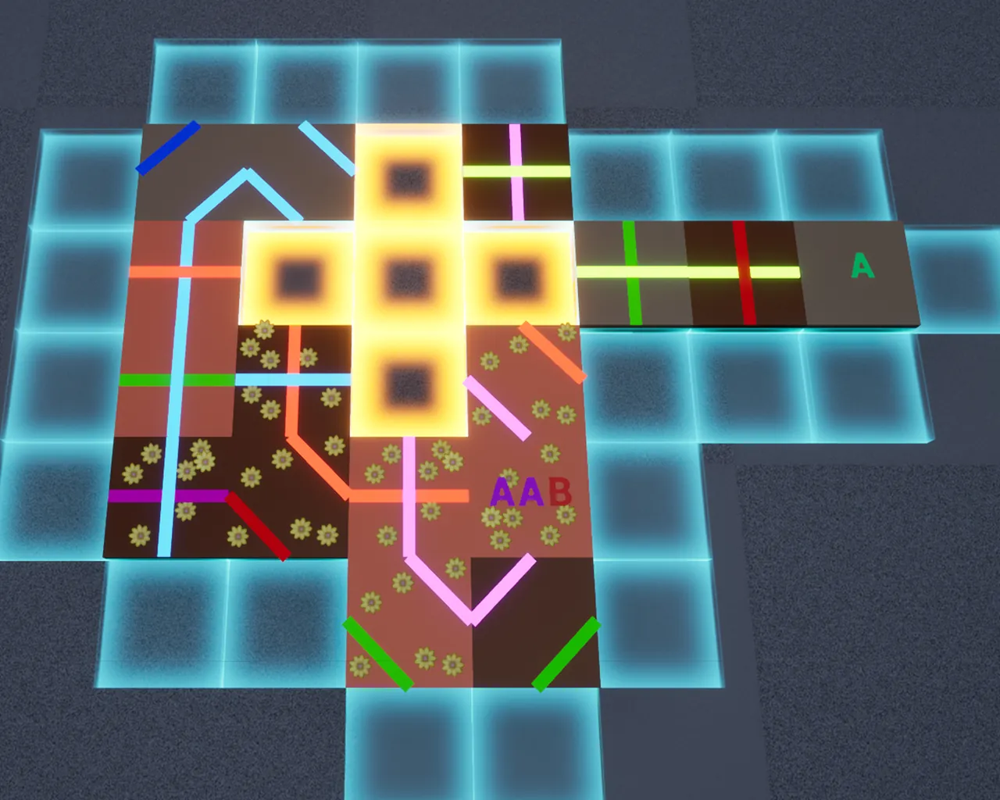
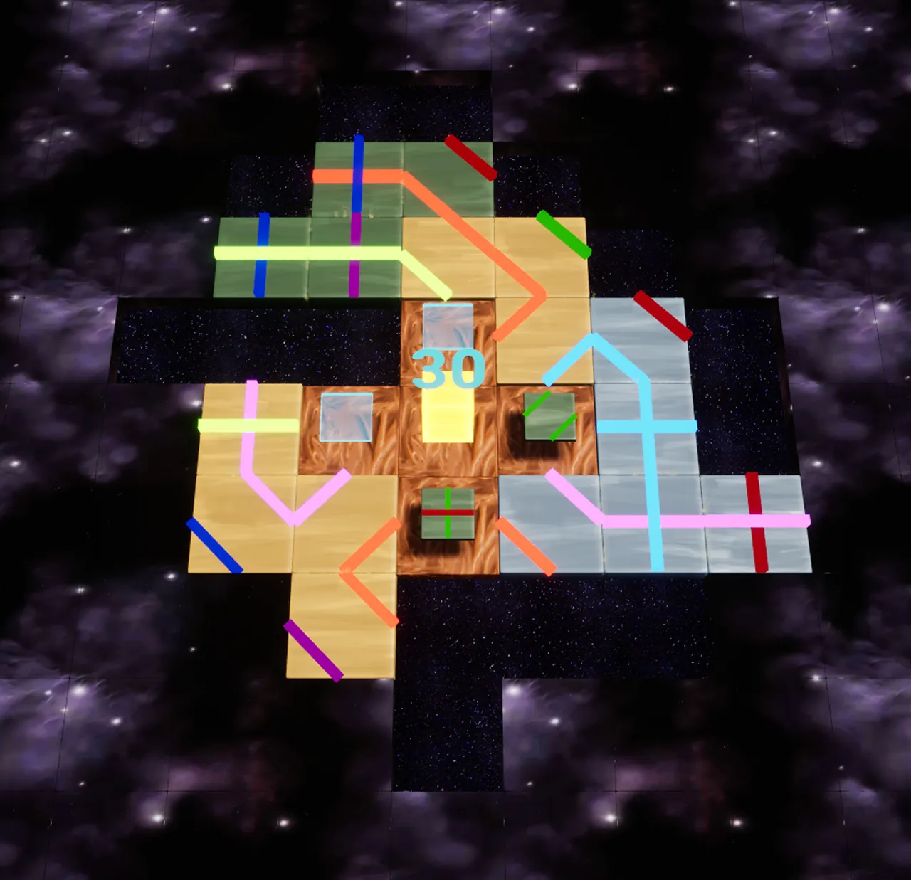
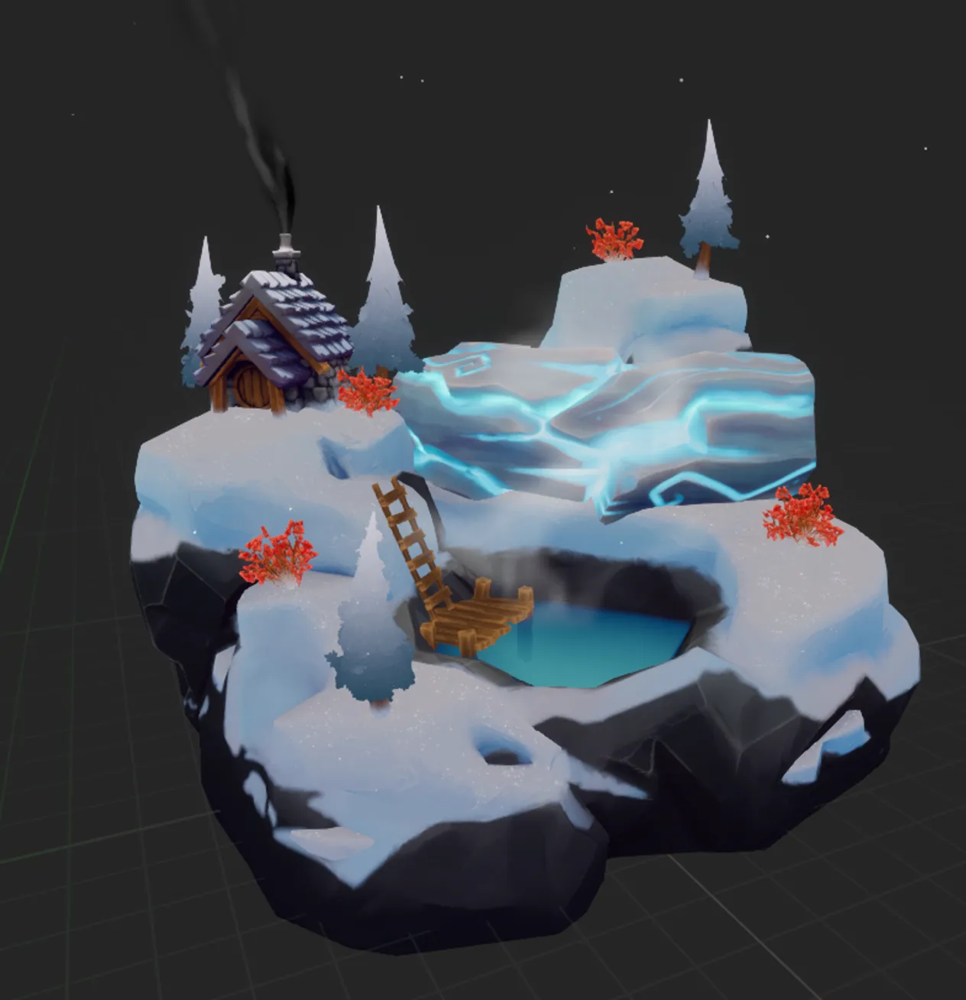
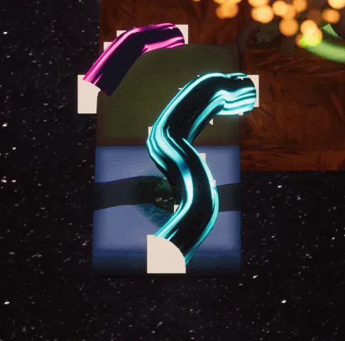
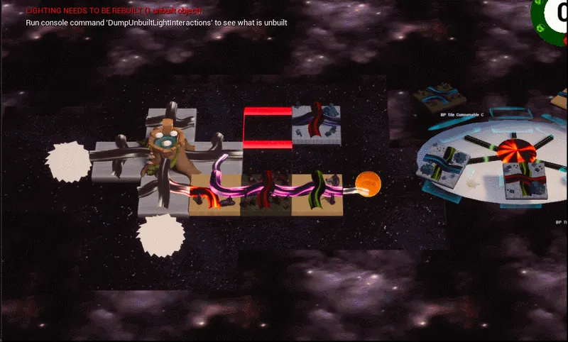

JELLYFISH & GIANTS · IN DEVELOPMENT
Solace
A cosy puzzle strategy game about building a new home for a colony of spacefaring woodland Nomes. As the Nome Architect, you place and rotate terrain tiles to grow the roots of the World Tree, and rearrange your layout each turn to meet changing goals.
Solace is made by JellyFish & Giants, the studio I founded. I'm the creative lead and programmer, and I designed and implemented the game's systems.
- RoleCreative lead & programmer
- StudioJellyFish & Giants
- GenreCosy puzzle strategy
- EngineUnreal Engine

Design pillars
Agency
Paper playtests showed that players enjoy the game most when their choices, not luck, decide the outcome. The game rewards strategic decisions, so players improve from run to run.
Overlapping objectives
Simple mechanics layer into competing goals: match root colours, group biomes, meet tile goals and explore the board. That gives a low skill floor and a high skill ceiling.
Challenge without conflict
No combat and no harm to anyone. The challenge comes from cultivation, protection and growth, for players who prefer a calm game.
From paper to engine










What playtesting changed
- Feedback
Blocker tiles felt too aggressive.
ChangeNebula fog. Fog covers the board, and powered tiles clear it, so the same behaviour is rewarded instead of forced.
- Feedback
Players wanted deeper tile complexity.
ChangePlaces of Power. Hidden special tiles to unlock and activate, with strong effects that reward skilful play.
- Feedback
Players wanted stronger long-term goals.
ChangeGolden Seed and Endless modes. A concrete goal to recover the Golden Seed, and an endless mode for sprawling root networks.
Roadmap
A six-month plan across development, marketing and art, with a build and playtest every few weeks.
Tech art clips
These clips are still missing a lot of their gameplay communication, so they can be hard to follow. They are here mainly to show the technical work: splines, animation and set dressing.





